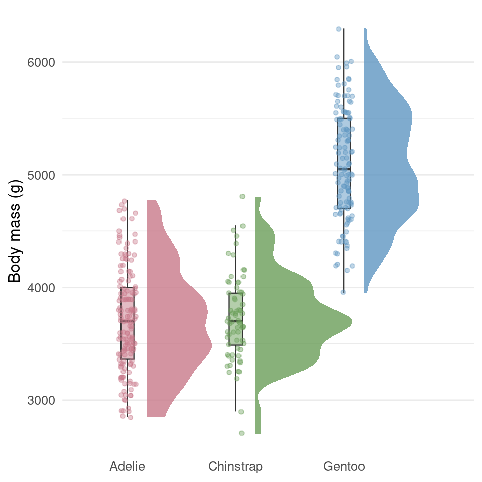
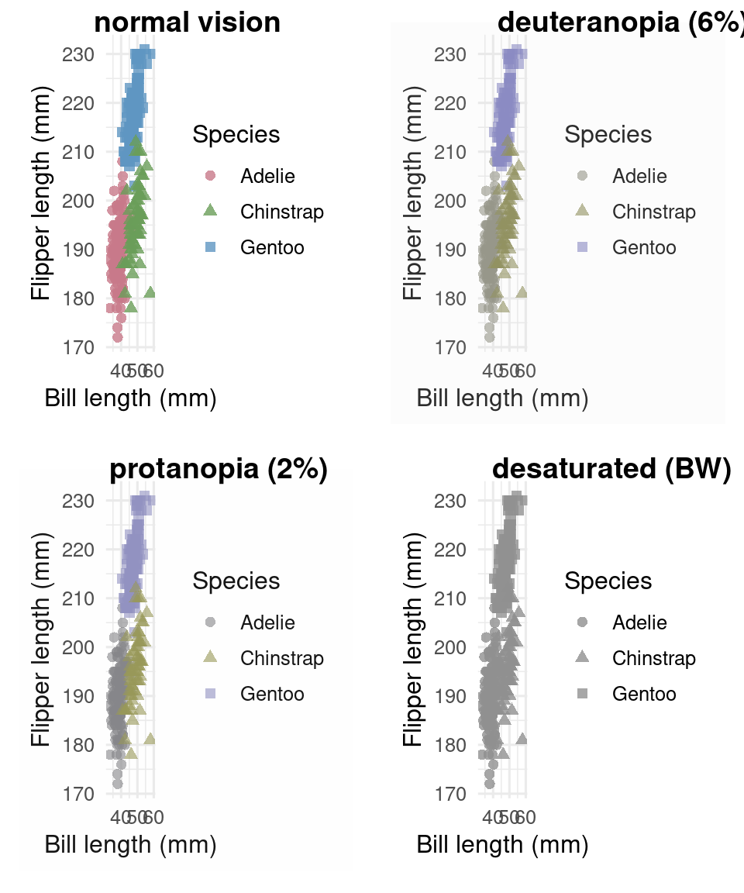
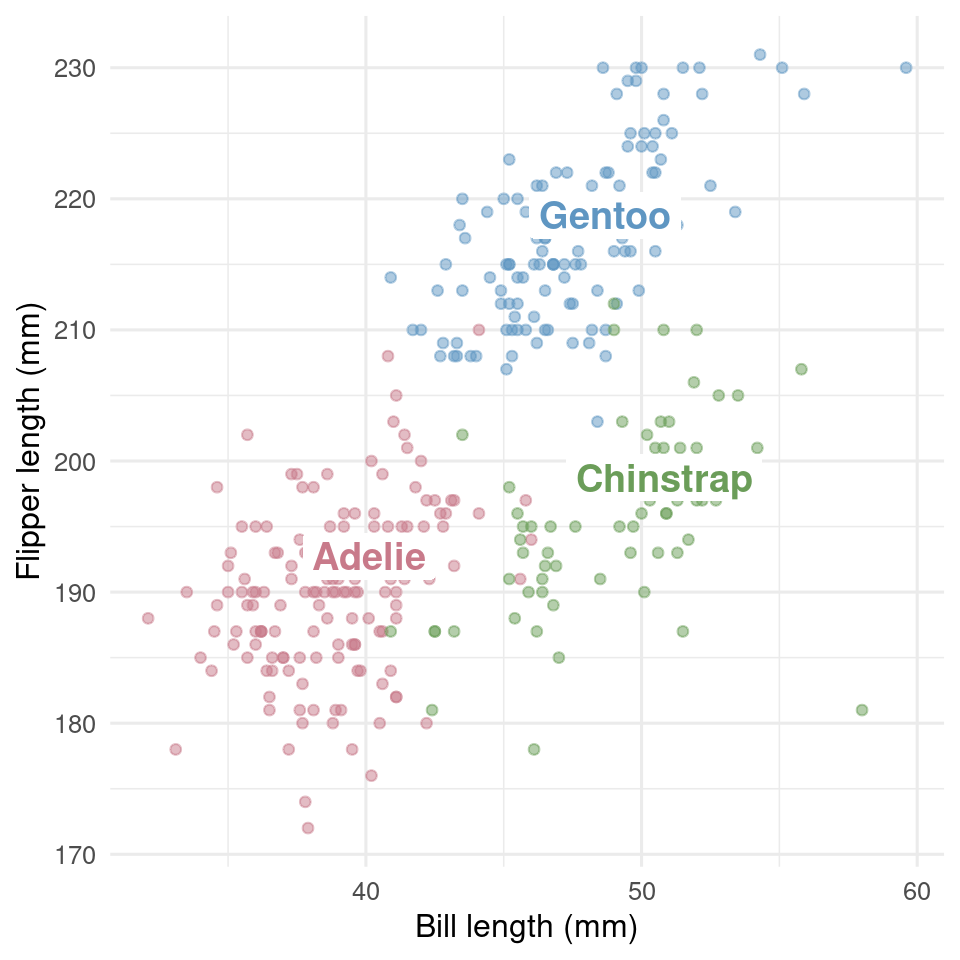
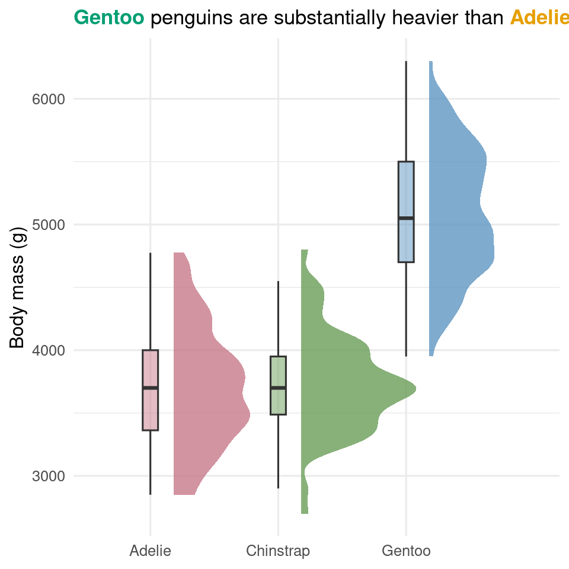
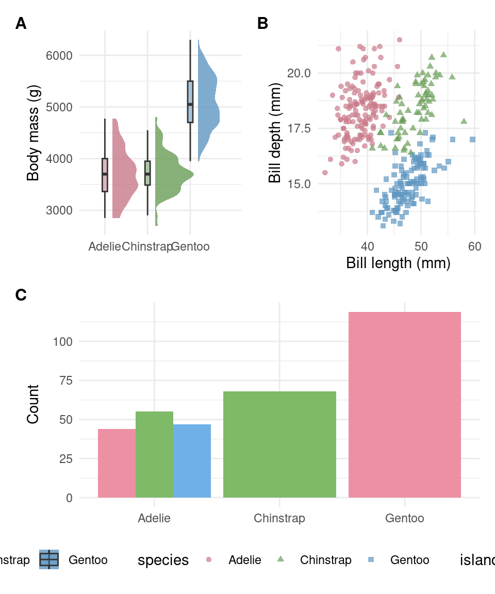

Day 3 Block 4: Extensions in action
The base ggplot2 grammar covers most of the chart types but leaves several common visualisation needs awkward. Four extension packages plug the gaps directly:
ggdistfor distributional plots (raincloud, half-eye, point-interval) — this is the implementation of "show the raw data wherever sample size permits" from Block 1.colorspaceandcolorBlindnessfor palettes and accessibility checking — these operationalise the encoding hierarchy (Block 1) and the accessibility principle (Block 1).ggrepelandggtextfor direct labelling and rich text — these are the toolkit for the direct labelling and highlighting techniques in the audience matrix (Block 2).patchworkfor multi-panel composition — the natural alternative tofacet_wrap()when subplots differ in chart type rather than data subset.
Statistical annotation (significance brackets, p-value labels on figures) is not covered in this workshop. The principled approach is to fit a model with emmeans or equivalent and use ggpubr::stat_pvalue_manual() to render the contrasts; the relevant skill file documents the canonical pattern. For a half-day workshop covering the visualisation principles, statistical annotation has been left to the wider statistical training in your programme.
Each segment below follows the same pattern: a brief problem statement, a worked example that the facilitator walks through with running commentary, and a short try later note pointing to a modification you can attempt in your own time. Participants are encouraged to run each code chunk in their session as the facilitator walks through it; the active modifications are deliberately deferred so that the in-session pace stays brisk and the cognitive load of typing under time pressure is removed. The deferred tasks are written out in full in an In your own time subsection at the end of each segment, with collapsed solutions for self-marking.
7.13 Distributions with ggdist
The default way to summarise a continuous variable across groups is a boxplot. A boxplot is informative but lossy: it shows quartiles and outliers but conceals the shape of the underlying distribution. Bimodality, skew, and gaps in the data all vanish.
The raincloud plot (Allen et al., 2021) addresses this by combining three layers: a half-density (the "cloud") to show distribution shape, a slim boxplot for summary statistics, and jittered points (the "rain") for the raw data. ggdist::stat_halfeye() provides the cloud half.
penguins_complete |>
ggplot(aes(x = species, y = body_mass_g, fill = species, colour = species)) +
ggdist::stat_halfeye(
adjust = 0.5,
justification = -0.2,
.width = 0,
point_colour = NA,
alpha = 0.8
) +
geom_boxplot(
width = 0.12,
outlier.shape = NA,
alpha = 0.5,
linewidth = 0.4,
colour = "grey20"
) +
geom_jitter(width = 0.08, alpha = 0.4, size = 1.2) +
colorspace::scale_fill_discrete_qualitative(palette = "Dark2") +
colorspace::scale_colour_discrete_qualitative(palette = "Dark2") +
labs(x = NULL, y = "Body mass (g)") +
theme_minimal(base_size = 12) +
theme(legend.position = "none",
panel.grid.major.x = element_blank())
Three things to notice. First, the cloud, the box, and the points are three separate layers stacked in a specific order — clouds at the back, box in the middle, points on top. Second, justification = -0.2 shifts the cloud off the centre line so the box and points sit beside it rather than underneath. Third, the boxplot's outlier points are hidden with outlier.shape = NA because all the raw data are already shown as jittered points; leaving them on would double-count.
Try later. Swap the geom_boxplot()
layer for ggdist::stat_pointinterval() and observe the
change. stat_pointinterval shows the median and two
intervals (by default, 50% and 95%); look at the function help to see
how to control which intervals are drawn.
The raincloud applies the "show the raw data wherever sample size permits" principle from Block 1 directly: the cloud shows distribution shape, the box shows summary statistics, and the jittered points show every individual observation. No information is hidden behind a summary.
7.13.1 In your own time
Modify the worked example to flip the orientation (raincloud
horizontal rather than vertical) and to use
ggdist::stat_pointinterval() instead of the boxplot.
stat_pointinterval shows the median and a range — work out
from the documentation what range it shows by default.
7.14 Accessible colour with colorspace and colorBlindness
The principles from Block 1 are operationalised by two packages. colorspace constructs the palette; colorBlindness verifies it. Use the pair together — palette without verification leaves accessibility to chance.
fig <- penguins_complete |>
ggplot(aes(x = bill_length_mm, y = flipper_length_mm,
colour = species, shape = species)) +
geom_point(alpha = 0.8, size = 2) +
colorspace::scale_colour_discrete_qualitative(palette = "Dark2") +
labs(x = "Bill length (mm)", y = "Flipper length (mm)",
colour = "Species", shape = "Species") +
theme_minimal(base_size = 12)
# Inspect under simulated colour vision deficiency
colorBlindness::cvdPlot(fig)
The five-panel grid shows: the original, deuteranopia, protanopia, tritanopia, and a desaturated version. The figure passes if all groups remain distinguishable in all five panels. If any panel fails — typically deuteranopia or protanopia for red-green sensitive figures — strengthen the redundant encoding (shape or linetype), choose a more separated palette, or fall back to direct labelling.
Try later. Build the same scatter plot
without shape = species in the mapping, and rerun
cvdPlot(). Compare the two outputs honestly. The greyscale
panel is the most revealing: groups distinguishable only by colour
collapse to indistinguishable shades of grey.
This segment is the encoding hierarchy from Block 1 made operational: position handles the two continuous variables (rank 1), colour hue handles the categorical (rank 2 for categorical data), and shape is added redundantly (rank 3) so that the figure does not depend on colour alone.
7.14.1 In your own time
Build a scatter plot from penguins_complete using only
bill_length_mm and bill_depth_mm, colour
mapped to species, and without shape mapped redundantly. Run
colorBlindness::cvdPlot(). Now add
shape = species to the mapping and rerun. Compare the two
outputs honestly. Which encoding survives the desaturation test?
7.15 Direct labelling with ggrepel and ggtext
A figure legend separates the colour key from the data: the reader's eye has to travel from the data layer to the legend and back, holding a mapping in working memory. Direct labelling puts the group name on the data itself, so the eye reads the label as part of the data. For talks, posters, and public engagement, direct labelling is almost always clearer.
The challenge is that labels placed at data points overlap each other. ggrepel::geom_text_repel() solves this by moving labels iteratively until they no longer collide, with connector lines preserved.
# Label location: one label per species at the species centroid
label_data <- penguins_complete |>
group_by(species) |>
summarise(x = median(bill_length_mm),
y = median(flipper_length_mm),
.groups = "drop")
penguins_complete |>
ggplot(aes(x = bill_length_mm, y = flipper_length_mm, colour = species)) +
geom_point(alpha = 0.5, size = 1.5) +
ggrepel::geom_label_repel(
data = label_data,
aes(x = x, y = y, label = species, colour = species),
size = 5,
fontface = "bold",
label.size = 0,
inherit.aes = FALSE
) +
colorspace::scale_colour_discrete_qualitative(palette = "Dark2") +
labs(x = "Bill length (mm)", y = "Flipper length (mm)") +
theme_minimal(base_size = 12) +
theme(legend.position = "none")
ggtext is the companion package for rich text: it allows markdown formatting inside titles, axis labels, and legend entries, and supports inline colour. This is what lets you write a title like "**Gentoo** penguins are <span style='color:#009E73;'>**substantially heavier**</span> than Adelie and Chinstrap" directly. To enable rich text on a theme element, set it to ggtext::element_markdown().
penguins_complete |>
ggplot(aes(x = species, y = body_mass_g, fill = species)) +
ggdist::stat_halfeye(adjust = 0.5, justification = -0.2,
.width = 0, point_colour = NA, alpha = 0.8) +
geom_boxplot(width = 0.12, outlier.shape = NA, alpha = 0.5,
colour = "grey20") +
colorspace::scale_fill_discrete_qualitative(palette = "Dark2") +
labs(
title = "<span style='color:#009E73;'>**Gentoo**</span> penguins are substantially heavier than <span style='color:#E69F00;'>**Adelie**</span> and <span style='color:#56B4E9;'>**Chinstrap**</span>",
x = NULL,
y = "Body mass (g)"
) +
theme_minimal(base_size = 12) +
theme(legend.position = "none",
plot.title = ggtext::element_markdown(size = 13, lineheight = 1.2))
Inline colour in the title removes the need for a separate legend entirely. The colours in the title match the fills in the data, and the reader makes the mapping in a single saccade.
Try later. Modify the rich-text title so that only
Gentoo is highlighted in colour and the other species
names appear in plain text. Add a subtitle (using
ggtext::element_markdown() on plot.subtitle)
that gives the sample sizes for each species. Inline colour in subtitles
works the same way as in titles.
These techniques are the practical implementation of the direct labelling and highlighting rows in the audience matrix from Block 2. Direct labelling and inline-coloured titles are the toolkit you reach for when designing for posters, talks, or public engagement — contexts where the reader cannot afford the eye-travel to a separate legend.
7.15.1 In your own time
Take the rich-text title in the worked example and modify it so that
only Gentoo is highlighted in colour (in
#009E73), and the other two species names appear in plain
text. Then add a subtitle that gives the sample sizes for each species.
The subtitle should also be rich text, so you will need to set
plot.subtitle = ggtext::element_markdown() in
theme().
7.16 Multi-panel composition with patchwork
For panels showing the same chart type for different subsets of the data, use facet_wrap() or facet_grid(). For panels showing different chart types or different aspects of one analysis, use patchwork.
Three defaults apply for patchwork compositions: collect legends into a single shared legend, tag panels with uppercase letters, and use an explicit design = string for the layout. The string is self-documenting; you can rearrange the layout by editing the letters without rewriting the composition call.
p1 <- penguins_complete |>
ggplot(aes(x = species, y = body_mass_g, fill = species)) +
ggdist::stat_halfeye(adjust = 0.5, justification = -0.2,
.width = 0, point_colour = NA, alpha = 0.8) +
geom_boxplot(width = 0.12, outlier.shape = NA, alpha = 0.5) +
colorspace::scale_fill_discrete_qualitative(palette = "Dark2") +
labs(x = NULL, y = "Body mass (g)") +
theme_minimal(base_size = 11)
p2 <- penguins_complete |>
ggplot(aes(x = bill_length_mm, y = bill_depth_mm,
colour = species, shape = species)) +
geom_point(alpha = 0.7) +
colorspace::scale_colour_discrete_qualitative(palette = "Dark2") +
labs(x = "Bill length (mm)", y = "Bill depth (mm)") +
theme_minimal(base_size = 11)
p3 <- penguins_complete |>
count(species, island) |>
ggplot(aes(x = species, y = n, fill = island)) +
geom_col(position = "dodge") +
colorspace::scale_fill_discrete_qualitative(palette = "Set 2") +
labs(x = NULL, y = "Count") +
theme_minimal(base_size = 11)
# Edit the letter grid below to rearrange panels.
# Letters refer to plots in the order they are added (A = p1, B = p2, C = p3).
layout <- "
AB
CC
"
p1 + p2 + p3 +
patchwork::plot_layout(design = layout, guides = "collect") +
patchwork::plot_annotation(tag_levels = "A") &
theme(legend.position = "bottom",
plot.tag = element_text(face = "bold", size = 12))
The & operator applies its right-hand side to every subplot, including those added later — use it for global theme settings like legend position and tag formatting. The + operator applies only to the most recently added subplot.
Try later. Change the layout string so that panels A
and C are stacked on the left and panel B occupies the full right column
("AB"). Then remove guides = "collect"
and observe what happens: each subplot’s legend renders independently
and the figure becomes cluttered.
Multi-panel composition is the workhorse for figures that combine multiple aspects of one analysis into a single deliverable. A typical journal "Figure 1" with three panels labelled A, B, C is almost always a patchwork composition, not a facet_wrap(). The layout string makes the composition editable: a reviewer who asks you to rearrange the panels does not require you to rewrite the code, only to edit the letters.
7.16.1 In your own time
Take the three-panel composition from the worked example. Change the
layout string so that panel A spans the entire top row, and
panels B and C share the bottom row. Then change
tag_levels = "A" to tag_levels = "i"
(lowercase Roman numerals) and observe the change. Finally, change
tag_levels to c("A", "i") for nested tagging
and see what happens.